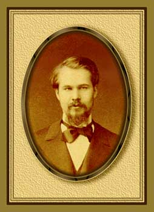
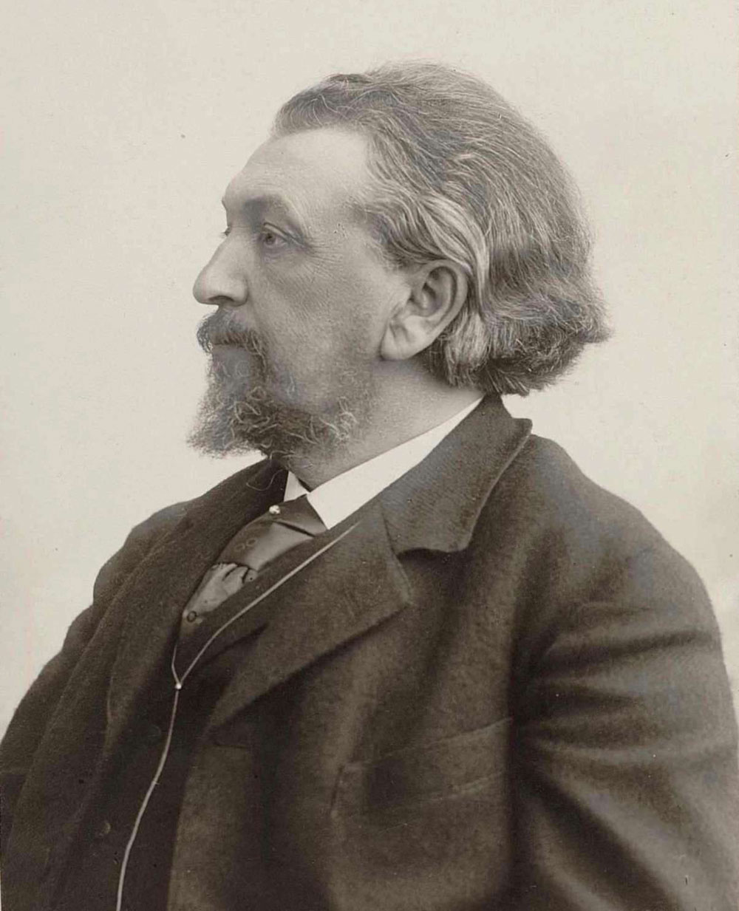
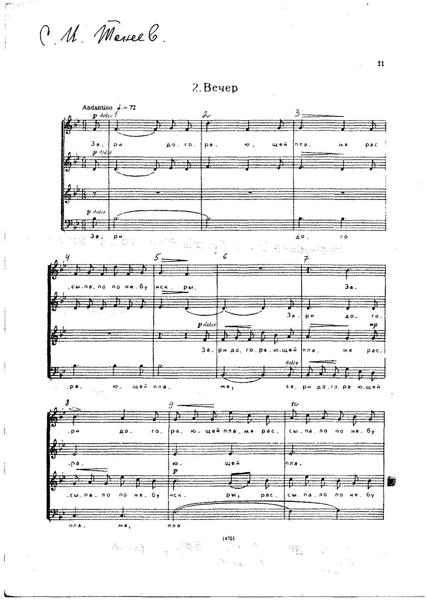
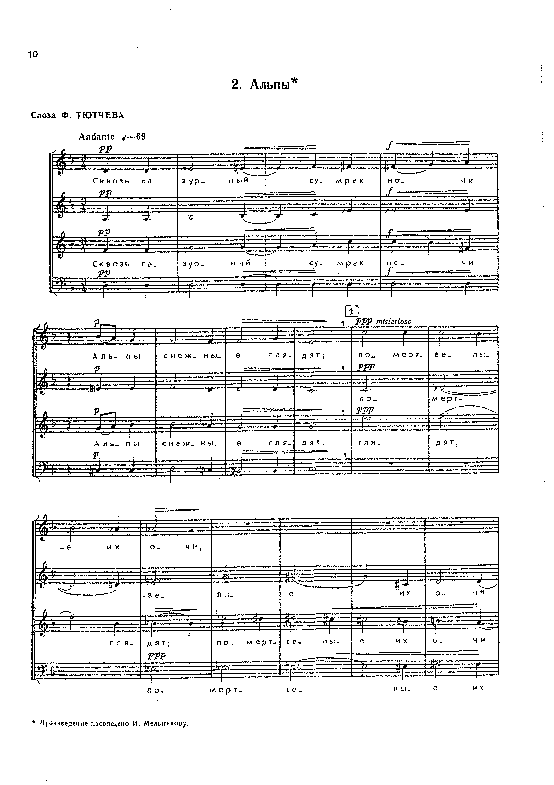
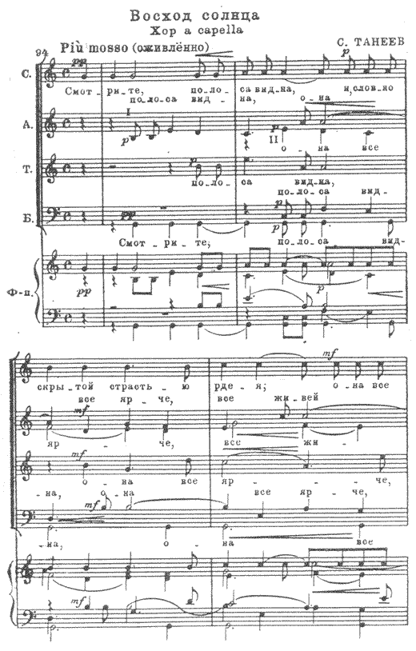
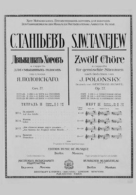

Хоровое творчество С.И. Танеева
В.С. ПоповОдной из особенностей русской хоровой культуры является наличие повышенного интереса к пению a capella. Это объясняется всем ходом музыкально-исторического развития в нашей стране. В народе песня исполнялась в прошлые века в повседневном быту—в обрядах, хороводах, играх и т. д. — хором без инструментального сопровождения. Другой ранней формой хорового пения на Руси было церковное хоровое пение, и оно также — по законам культа — не допускало привлечения инструментов. Это создало в течение веков богатые традиции пения a capella, на основе которых в России рано стали создаваться профессиональные хоры. Некоторые из них достигали больших художественных высот в этом трудном виде музыкального исполнительства. Всемирно известными были Придворная певческая капелла в Петербурге и Синодальный хор в Москве. Существованию этих отличных хоров обязаны мы тем, что в России выработалась устойчивая культура пения a capella, очень высокого уровня, имевшая влияние на развитие всей русской музыки.Все крупнейшие русские композиторы отдали дань стилю a capella. Творчество их в этой области протекало в двух направлениях: первое из них — культовые песнопения, второе — произведения светского содержания. Церковная хоровая культура, благодаря устойчивым традициям русской религиозной жизни, интенсивно развивалась, опираясь на сложившиеся веками музыкальные формы. Светская же хоровая музыка, лишенная таких традиций, лишь в XIX веке получает широкое развитие (академик Б. В. Асафьев считает, что первыми хоровыми произведениями, «стоящими на грани готовой к развитию самостоятельной (не крепостной) светской хоровой культуры» [1], являются «Петербургские серенады» Даргомыжского). К концу XIX и в начале XX века, когда были созданы великолепные образцы сочинений для хора a capella, русская музыка в этой области достигает высокого художественного совершенства.
В создании произведений для хора a capella и поднятии этого жанра до уровня самостоятельной, стилистически обособленной композиции большую роль сыграл С. И. Танеев.
Характерным для его творчества является преобладание хоров светского содержания [2]. Правда,у Танеева есть несколько церковных композиций, написанных им в ранний период творчества (80-е годы), но эти произведения для него самого носили характер упражнений в овладении жанром a capella и не были опубликованы. Объяснение этому нужно искать в мировоззрении Танеева. В своих воспоминаниях «Мои встречи с Танеевым»—-пианист Е. В. Богословский приводит следующее высказывание Танеева:
«… Я затронул вопрос, — вспоминает он, — почему бы Сергею Ивановичу не написать что-нибудь для нашей церковной службы…». — «Да ведь я неверующий,—ответил мне на это С. И., — я не могу писать церковной музыки…» [3].
Человек исключительной принципиальности и честности, — Танеев и здесь проявил свою прямоту.
Очень существенно, что почти все свои хоровые произведения Танеев посвящал тому или другому исполнительскому коллективу. Это дает основание предполагать, что непосредственная связь с исполнителями была одним из творческих принципов Танеева. Современники Танеева рассказывают, что его часто можно было видеть на репетициях Синодального хора, а также на спевках Московской симфонической капеллы, руководимой В. А. Булычевым. Он приходил, чтобы слушать хор и в его звучании изучать художественные и технические возможности исполнения а capella. Связь собственного творчества Танеева с исполнительством была столь тесной, что он не отдавал в печать свои произведения до прослушивания и проверки их в хоровом исполнении. Об этом можно судить но выдержкам из его писем:
«… Я сочинил на слова Тютчева «Из края в край, из града в град» двойной восьмиголосный хор… Партитуру хора отправляю в Синодальное училище. Его отлитографируют и мне споют. После этого я его Вам вышлю» (из письма М. П. Беляеву от 15 декабря 1898 года).
«… Я предполагаю послать Вам два хора [«Звезды» и «Альпы», ор. 15], только что мною сочиненные. Как только я их услышу в исполнении Синодального хора и проверю, всё ли звучит так, как я предполагал, тотчас же Вам их пришлю» (из неопубликованного письма М. П. Беляеву от 17 ноября 1900 года). И несомненно, что эта непосредственная связь с исполнителями в известной степени способствовала высокому художественному уровню его сочинений для хора a capella.
Тексты для хоров Танеев выбирал с большой тщательностью; все они принадлежат лучшим русским поэтам и отличаются высокой художественностью. По своему содержанию они относятся в большинстве случаев к области философской лирики и часто дают поэтические описания природы. Такие лирико-философские произведения, как «На могиле», «Звезды» (ор. 27), типичны для творческих интересов Танеева. Яркими образцами хоров, живописующих природу, могут служить: «Вечер», «Посмотри, какая мгла», «Восход солнца». Значительно реже используются им тексты, которые выходят за пределы указанных областей; такие произведения, как «Песня короля Регнера», единичны у Танеева.
Содержание текстов в значительной мере определяет и круг художественных образов танеевских хоров. Созерцательность, соединенная иногда с меланхолической грустью, раздумье, взволнованный порыв, смятенность чувств — все это находит разнообразное преломление в хорах Танеева. Необыкновенно характерно спокойствие музыки в хорах «Звезды» (ор. 15), «Из вечности музыка вдруг раздалась» или некоторый налет меланхоличности в терцете «Рим ночью». Глубокомысленное размышление наполняет хоры «Сто лет», «Развалину башни».
Нередко встречаются хоры, передающие большую взволнованность чувств («Из края в край, из града в град»), иногда постепенно рассеивающуюся и приводящую к просветлению («На корабле»). Очень редко встречаются произведения, наполненные тоскливой безнадежностью («Сонет Микель-Анджело»).
Целый ряд произведений основным эмоциональным содержанием имеет спокойную, светлую умиротворенность («Тихой ночью», «Молитва», «Вечер»). Не чужда Танееву и изобразительность. В хоре «Восход солнца» композитор дает образ солнечного света. Контрастно сопоставленный с картиной предрассветной тишины, он получает необыкновенную яркость в звучных сочетаниях заключительной части, передающей «благовест всемирный победных солнечных лучей». В хоре «Альпы» по контрасту сопоставляются сумрачная картина гор ночью и постепенное просветление природы. Программная изобразительность ярка в квартете «Монастырь на Казбеке»: величественный образ Казбека и облик монастыря, переданный хоральными звучаниями.
Совершенно исключительным по мощи и яркости музыкального содержания является хор: «В дни, когда над сонным морем», где с громадной силой выразительности созданы контрастные образы тихого и бурного моря.
Особенности хорового стиля Танеева тесно связаны с его общим музыкальным стилем. Сошлемся на письмо Танеева к П. И. Чайковскому от б апреля 1884 года, в котором он, касаясь успеха своей кантаты «Иоанн Дамаскин», высказывает следующие мысли:
«…Контрапунктические «хитрости» не мешают музыке быть привлекательной для слушателей и производить на них впечатление…».
«Контрапунктический способ писания не делает музыку скучной и сухою…».
«Контрапунктические «хитрости», так же как и гармонические, перестают быть таковыми, как только ими вполне овладеешь, и могут служить для целей вполне художественных…».
«В гармонии, если не ударяться в область невыносимых для слуха диссонансов, трудно отыскать что-нибудь новое и оригинальное, контрапунктические же комбинации могут доставить много нового и интересного вне области вычурного…».
В этих словах выражены творческие устремления композитора, касающиеся как всего его стиля, в целом, так и хорового, в частности.
Хоры a capella русских композиторов конца XIX века создавались как пьесы малых форм, преимущественно лирического содержания, изложенные в гармоническом стиле. Так же сочиняет свои ранние произведения, изданные без обозначения opus’a, Танеев. Но постепенно он меняет свое отношениек хору a capella. Уже в «Восходе солнца» ( ор. 8 ) намечается стремление композитора рассматривать хор как инструмент, способный к исполнению более крупных форм. Здесь автор отходит от хоровой миниатюры, и, следуя содержанию текста, создает довольно крупное двухчастное произведение. Хотя в основе здесь лежит гармонический склад, но значительную роль начинают уже играть полифонические приемы развития музыкального материала, что проявляется в широко использованных имитациях. 13 хоре «Из края в край» Танеев дает крупную хоровую композицию, основанную целиком на полифоническом развитии музыкального материала. В дальнейших хоровых сочинениях интерес композитора к полифонии все усиливается: хоры «Звезды» и «Альпы» (ор. 15) создаются Танеевым на усложненной полифонической основе.
Но вершины контрапунктического мастерства в своем хоровом творчестве Танеев достигает в opus’e 27. Для этих хоров характерно преобладание контрапунктических средств выражения над гармоническими. Аккордовое сложение здесь встречается довольно редко, главным образом, в начале произведения, в качестве вступления,— или в окончаниях, а иногда и в середине, являясь как бы гранью между полифоническими частями. В основе каждого произведения лежит тема, из которой композитор черпает материал для контрапунктического развития музыкальной ткани. В хорах ор. 27 Танеевым найдена такая полифоническая форма, которая, повидимому, соответствовала его теоретическим взглядам, высказанным 25 лет назад в цитированном письме к Чайковскому. Танеев широко использует колоссальные возможности мелодико-полифонических комбинаций в многоголосном хоре и доводит технику хорового письма до виртуозности. Кажется, что он не знает никаких трудностей в сфере контрапункта.
Виртуозное владение каким-либо мастерством может таить в себе опасность чрезмерного увлечения техникой ради самой техники. Танеев как большой художник не мог допустить, чтобы в его сочинениях техника преобладала над идейно-художественным содержанием, в ущерб последнему. В большинстве его хоров «контрапунктические хитрости» не мешают выявлению содержания, служат формой выражения основной мысли произведения. Но в некоторых хорах чувствуется, что контрапунктическая техника становится почти самодовлеющей, и это приводит к тому, что идейно-художественная сторона произведения проигрывает. Такое впечатление производит его грандиозный «Прометей» (из ор. 27), написанный в форме тройной пятиголосной фуги, — являющийся ярким образцом излишне сложного произведения. Исключительно интересны по глубине содержания и крупным масштабам хоры: «Развалину башни», «Увидал из-за тучи утес», «Звезды», «По горам две хмурых тучи» и др.
Темы Танеева, на которых он строит свои произведения, отличаются мелодичностью. Голосоведение безупречно. Хоровые голоса, сплетаясь в звуковые комплексы, создают интересную и своеобразную гармонию.
Необходимо коснуться вопроса взаимоотношения словесного и музыкального текста в хоровом стиле Танеева. Аккордовое, чисто-гармоническое изложение дает наибольшие возможности донести до слушателя текст; полифоническая же фактура изложения, основой которой является сложное голосоведение, мешает этому. В первых хоровых произведениях Танеева, благодаря их гармоническому складу, нетрудно уловить содержание слов, на которые написана музыка. С усложнением полифонической фактуры становится все труднее рельефно выделить содержание текста, и Танееву не всегда удается преодолеть эти трудности.
У Танеева литературный образ служит источником для возникновения музыкального образа, содержание литературного произведения для Танеева — программа произведения музыкального, диктующая его основную мысль и настроения, его образы. Танеев очень широко трактует литературный текст, стремясь передать прежде всего основную направленность его содержания, не прибегая к излишней детализации в выразительных средствах музыки. При обилии полифонических, имитационных последований словесный текст, вследствие его больших размеров, нередко пропадает для слушателя из-за сложных полифонических сплетений. На фоне этих сплетений выделяются, в основном, лишь гласные, необходимые композитору при построении контрапунктической звуковой ткани. В качестве примера может служить упомянутый выше «Прометей».
Для большей полноты характеристики хорового творчества Танеева остановимся на некоторых специфических сторонах его произведений для хора. Одна из них—разнообразие хоровых составов. Так, первые четыре номера ор. 35 написаны для трехголосного мужского хора. Произведения, входящие во вторую тетрадь (№№ 5—8), предназначены для исполнения четырех- и пятиголосным мужским хором. В третьей тетради ор. 35—хоры на шесть голосов однородного мужского состава.
Смешанный хор Танеев понимает, как любую комбинацию мужских и женских голосов. Его терцеты a capella ор. 23, которые могут исполняться хором (как указывает композитор), написаны для сопрано, альта и тенора. Квартеты ор. 24 предназначены для четырех голосов довольно оригинального состава: два сопрано, альт и тенор. Есть у Танеева произведения, рассчитанные на обычный, строго четырехголосный, смешанный хор, например: «На могиле», «Вечер», «Посмотри, какая мгла». Некоторые произведения написаны для пятиголосного смешанного хора («Прометей»). Часто Танеев прибегает к divisi в хоровых партиях, доходя иногда до восьмиголосья (например, в хоре «Восход солнца»). Некоторые из своих произведений он пишет для двойных составов хора («Из края в край», «По горам две хмурых тучи», «В дни, когда над сонным морем»). Необходимо отметить и такой прием, когда произведение построено так, что женские голоса рассматриваются как самостоятельный хор: этим подчеркивается значение мужских голосов, также образующих обособленный ансамбль. И хотя эти группы местами поют одновременно, композитор сохраняет за каждой из них значение самостоятельного хора. Таков принцип построения в хоре «Звезды» (ор. 27), рассчитанном на исполнение двумя самостоятельными хорами: трехголосным женским и трехголосным мужским. Нужно отметить, что, создавая произведения для самых разнообразных составов хора, Танеев почему-то избегал писать для однородного женского хора.
Одна из особенностей хорового письма Танеева — почти постоянная устойчивость количества реальных хоровых голосов в его партитурах, тогда как для русской народной хоровой музыки и произведений в этом духе характерно именно отсутствие этой устойчивости: часто унисон развертывается в многоголосие, и, наоборот, многоголосное звучание так же свободно переходит в унисон и октаву. Это можно встретить в хоровых произведениях Глинки, Мусоргского, а в наше время —у Шапорина, Давиденко, Коваля. Танеев только в отдельных случаях отходит от принципа сохранения устойчивого количества голосов, пользуясь иногда и унисоном (например, в хоре «Развалину башни»).
Применяя контрапунктические «премудрости», Танеев все время заботится о хорошей звучности хора. Он знает природу человеческих голосов и добивается естественного звучания хоровых партий, используя соответствующие регистры. Композитор никогда не злоупотребляет крайними звуками диапазонов. Он умеет держать голоса в определенном расположении их друг к другу, обеспечивающем прекрасную звучность. Полифоническое голосоведение не мешает слитности звучания. Это — результат мастерства хорового стиля Танеева.
Владея всеми тайнами хорового голосоведения, Танеев, однако, не стремится к изощренности в сменах колорита, возможных в хоре a capella. Он походит к хору, как к компактной, однородной массе, которой доступно широкое многоголосие, но недоступны яркие тембровые краски. И хотя он пишет для самых разнообразных составов хора, но для него это имеет скорее характер рационального подхода к различным комбинациям хоровых голосов. И мы не можем, к сожалению, отметить в его хорах (за некоторыми исключениями, — например, в хоре «Вечер») стремления к колоритной инструментовке хоровой звучности, к широкому использованию характерности тембров хоровых голосов. Это, вероятно, происходит потому, что у Танеева на первом месте стоит забота о голосоведении, о строго музыкальной выразительности и подчинении ее идейному содержанию произведения, но не о «нарядности» звучания.
Значительные трудности представляют хоры Танеева со стороны строя, — вытекающие из хроматизмов и сложной гармонии. Облегчающим моментом является строгая логика голосоведения. Большие требования предъявляет Танеев к исполнителям своих хоров. Его произведения требуют наличия хорошей вокальной основы у хоровых певцов, позволяющей извлекать певучий, тянущийся звук, свободный во всех регистрах.
Яркость музыкальных образов, монументальность формы, изумительное владение хоровыми красками, полифоническое мастерство при большой глубине содержания, нередко достигающей философской обобщенности, — все это определило громадное историко-стилистическое и художественное значение произведений Танеева для хора a capella.
[1] См. Б. Асафьев, Русская музыка. Изд. «Academia», M.—Л. стр. 120.
[2] Для хора a capella Танеевым написаны следующие произведения (перечисляется изданное):
Хоры без обозначения opus’a: «Венеция ночью» (Фет), «Ноктюрн» (Фет), «Веселый час» (Кольцов)—1880 год; «Песня короля Регнера» (Языков), «Вечерняя песня» (Хомяков)—1882 год.
Ор. 8. «Восход солнца» (Тютчев). Посвящено Русскому Хоровому Обществу В Москве (изд. 1898).
Ор. 10. «Из края в край» (Тютчев). Посвящено хору Императорской оперы в Петербурге (1898).
Ор. 15. Два хора a capella для четырех смешанных голосов (1900): № 1. «Звезды» (Хомяков), «Московскому Синодальному хору>>; № 2. «Альпы» (Тютчев), И. А. Мельникову.
Ор. 23. Ночи. Три терцета a capella для сопрано, альта и тенора (Тютчев). Могут исполняться также и хором (1907): № 1. «Сонет Микель-Анджело»; № 2. «Рим ночью»; № 3. «Тихой ночью».
Ор. 24. Два квартета a capella для двух сопрано, альта и тенора (Пушкин). Могут исполняться также и хором (1907): № 1. «Монастырь на Казбеке»; № 2. «Адели».
Ор. 27. Двенадцать хоров a capella для смешанных голосов (Полонский). Посвящается хору Московских Пречистенских курсов для рабочих (1909): № 1. «На могиле»; № 2. «Вечер»; № 3. «Развалину башни»; № 4. «Посмотри, какая мгла»; № 5. «На корабле»; № 6. «Молитва»; № 7. «Из вечности музыка вдруг раздалась»; № 8. «Прометей»; № 9. «Увидал из-за тучи утес»; № 10. «Звезды»; № 11. «Ио горам две хмурых тучи»; № 12. «В дни, когда над сонным морем».
Ор, 35. Шестнадцать хоров a capella для мужских голосов (Бальмонт). Посвящается Хоровому Обществу чешских учителей (1914): № 1. «Тишина»; № 2. «Призраки»; № 3. «Сфинкс»; № 4. «Заря»; № 5. «Молитва»; № 6. «В пространствах эфира»; № 7. «И сон и смерть»; № 8. «Небесная роса»; № 9. «Мертвые корабли»; № 10. «Звуки прибоя»; № 11. «Морское дно»; № 12. «Морская песня»; № 13. «Тишина»; № 14. «Гибель»; № 15. «Белый лебедь»; № 16. «Лебедь».
Посмертные издания — хоры «Сосна» (Лермонтов) и «Фонтан» (Козьма Прутков) — ранние произведения (1877 и 1880), впервые опубликованные в журнале «Советская музыка», 1940, № 7.
[3] См. журнал «Музыкальный Современник» за 1916 год, № 8, стр. 28.
Статья из сборника:
Памяти Сергея Ивановича Танеева (1856-1946). Сборник статей и материалов к 90-летию со дня рождения. Под ред. В. Л. Протопопова — М.-Л., Музгиз, 1947. — 276 с., ил., нот.